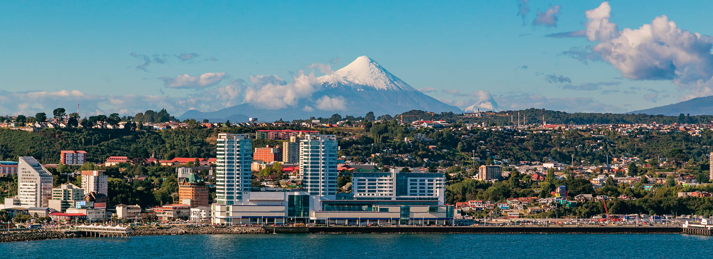
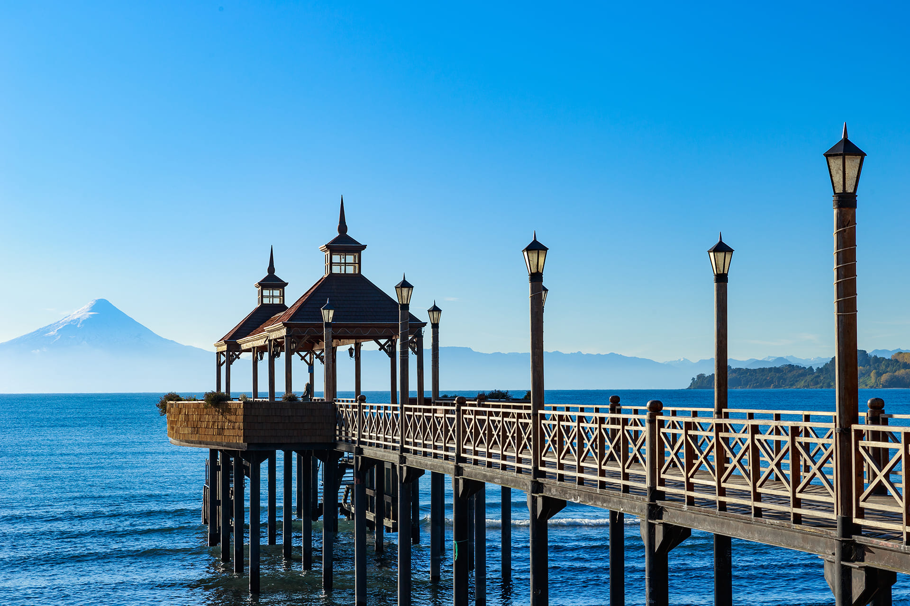

Puerto Montt, es una ciudad portuaria del sur de Chile, en la Región de Los Lagos, conocida por ser una vía de acceso a la Cordillera de los Andes y a los fiordos de la Patagonia. La catedral neoclásica de la ciudad, construida con madera en el siglo XIX, mira desde lo alto a la Plaza de Armas. Cerca está la Casa del Arte Diego Rivera, que presenta obras contemporáneas de artistas locales y nacionales. Justo en las afueras de la ciudad se ubica el mercado Caleta de Angelmó y el volcán activo Calbuco.
Degusta las delicias del mar en la caleta Angelmó, protagonista de la ciudad que te recibe con la mesa llena de mariscos y pescados de la zona. Deléitate con los variados restaurantes, algunos con vista a la Isla Tenglo y volcán Calbuco, donde todo se prepara al instante: paila marina, el “cancato” (guiso de pescado, chorizo, queso y tomate) y los insuperables erizos. Para comprar productos y utensilios locales, recorre la feria artesanal de Angelmó.

Año 1853, Vicente Pérez Rosales fundó en la playa de Melipulli (ribera norte del seno de Reloncaví), la villa de Puerto Montt como puerto de entrada y vía de comunicaciones hacia la impenetrable región del lago Llanquihue, centro de la colonización alemana.
Leer Mas¿Viajas al sur de Chile?, ¿buscas lugares con sabores gourmet y característicos de la zona?, es importante que conozcas la gigantesca diversidad de la gastronomía de Puerto Montt, tradicionales platos chilenos, patagónicos y europeos para deleitarse.
Leer Mas
Ven a conocer la ciudad de Puerto Montt en la Región de Los Lagos. Conoce el famoso mercado de artesanía, la Caleta Angelmó y recorre los alrededores de la ciudad como Puerto Varas, el lago Llanquihue, el Parque Nacional Alerce Andino y Chiloé.
Leer Mas
Tradición realizada hace 30 años, y se funda en la celebración costumbrista impulsada por vecinos en Lenca hace tres décadas, se ha consolidado como una contribución decidida para el desarrollo de las distintas localidades que se han unido a la Ruta.
Leer MasLos bosques de la región de Los Lagos y del sur del país, en general, son verdaderos laboratorios naturales, por la existencia de ecosistemas únicos en el planeta, permitiendo generar conocimientos que armonicen la relación del ser humano con el entorno para.
Leer Mas
Cuando el sol se oculta, la ciudad de Puerto Montt continúa brindando servicios gastronómicos y entretención para sus habitantes y visitantes. Comida, bebida, música en vivo y baile son los elementos que componen la bohemia de una noche entretenida.
Leer Mas